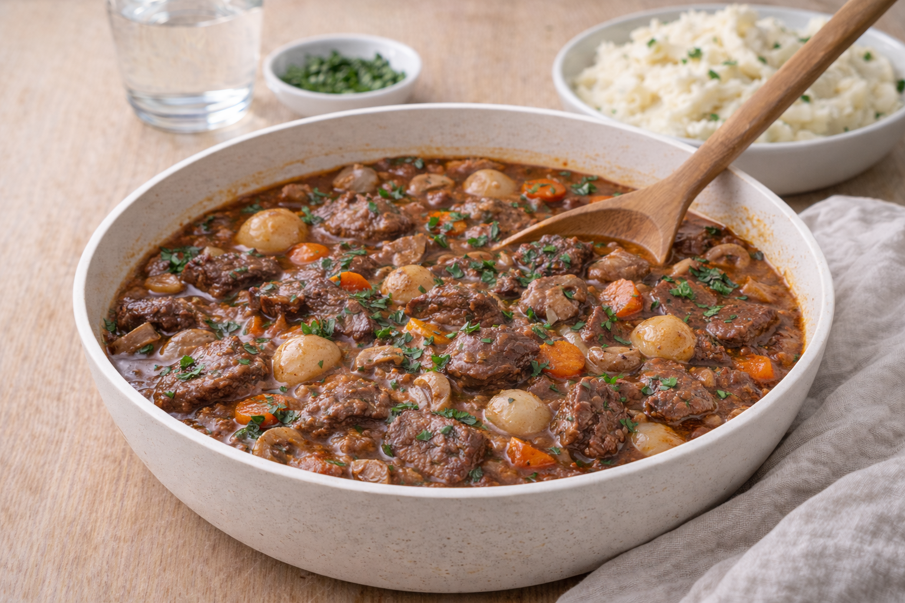

Boeuf Bourguignon
Boeuf Bourguignon – mustig fransk gryta med nötkött, svamp och morot. Perfekt helgmat som blir ännu bättre dagen efter.

Ingredienser
- 1 kg högrev, tärnad
- 2 morötter, skivade
- 1 gul lök, hackad
- 250 g champinjoner
- 3 dl rödvin (kan ersättas med mer buljong)
- 3 dl köttbuljong
- 2 msk tomatpuré
- 1 lagerblad
- Salt och svartpeppar
- Smör/olja
Så lagar du
- Bryn köttet i omgångar. Lägg i en gryta.
- Fräs lök och morot och rör ner tomatpuré.
- Häll på vin och buljong. Lägg i lagerblad och krydda.
- Låt sjuda under lock 1,5–2 timmar tills köttet är mört.
- Stek svampen separat och rör ner mot slutet.
- Smaka av och servera med potatispuré eller bröd.
Tips & variationer
- Den blir godast dagen efter – perfekt att laga i förväg.
- Vill du hålla budget: byt en del vin mot buljong.